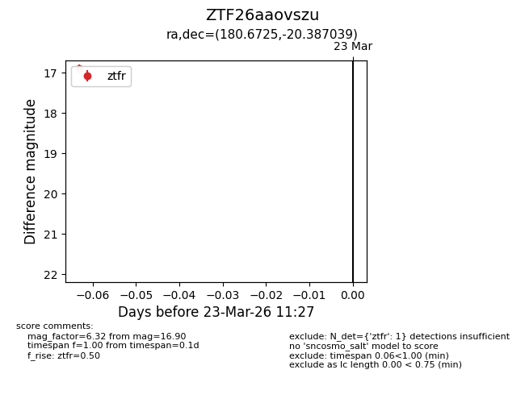
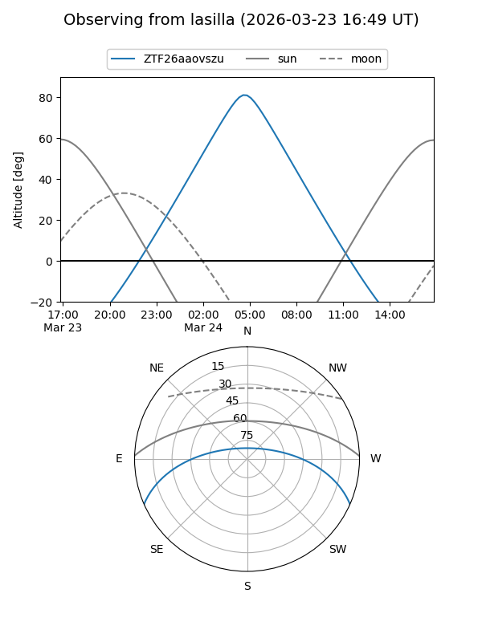
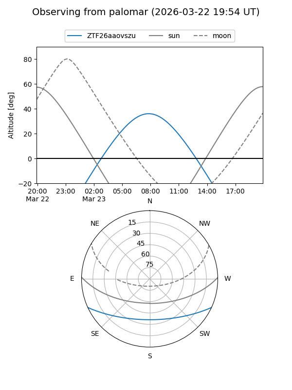

ZTF26aaovszu
Target ZTF26aaovszu at 2026-03-23 11:29
Aliases and brokers:
FINK: link
Lasair: link
ALeRCE: link
alt names
ZTF26aaovszu (ztf,fink_ztf)
Coordinates:
equatorial (ra, dec) = 180.6725,-20.38704
equatorial (HMS+DMS) = 12:02:41.40,-20:23:13.34
galactic (l, b) = (287.7221,+41.04054)
Flags:
Photometry:
last ztfr=16.90
1 ztfr detections
Lightcurve

Visibility


Additional plots